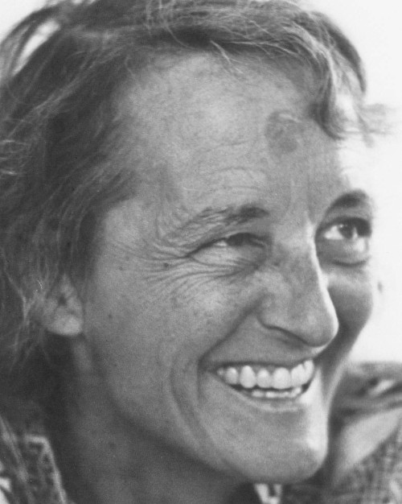

It is not the critic who counts; not the man who points out how the strong man stumbles, or where the doer of deeds could have done them better. The credit belongs to the man who is actually in the arena, whose face is marred by dust and sweat and blood; who strives valiantly; who errs, who comes short again and again, because there is no effort without error and shortcoming; but who does actually strive to do the deeds; who knows great enthusiasms, the great devotions; who spends himself in a worthy cause; who at the best knows in the end the triumph of high achievement, and who at the worst, if he fails, at least fails while daring greatly, so that his place shall never be with those cold and timid souls who neither know victory nor defeat.
-Theodore Roosevelt

The most beautiful people we have known are those who have known defeat, known suffering, known struggle, known loss, and have found their way out of the depths.
These persons have an appreciation, a sensitivity, and an understanding of life that fills them with compassion, gentleness, and a deep loving concern.
Beautiful people do not just happen.
-Elisabeth Kübler-Ross
I am not bound to win, but I am bound to be true. I am not bound to succeed, but I am bound to live by the light that I have. I must stand with anybody that stands right, and stand with him while he is right, and part with him when he goes wrong.
-Abraham Lincoln
If you're automatically sure that you know what reality is and who and what is really important, if you want to operate on your default setting, then you, like me, probably won't consider possibilities that aren't annoying and miserable. But if you've really learned how to think, how to pay attention, then you'll know you have other options. It will actually be within your power to experience a crowded, hot, slow, consumer hell-type situation as not only meaningful, but sacred -- on fire with the same force that lit the stars: love, fellowship, the mystical oneness of all things deep down."
-David Foster Wallace
Really, when I look back on it, I wouldn’t change a thing. I mean, it was so important for me to lose everything because I found out what the most important thing is ... to be true to yourself. Ultimately, that’s what’s gotten me to this place. I don’t live in fear. I’m free. I have no secrets and I know I’ll always be OK, because no matter what, I know who I am.
-Ellen DeGeneres
Fall forward. Here’s what I mean: Reggie Jackson struck out twenty-six-hundred times in his career -- the most in the history of baseball. But you don’t hear about the strikeouts. People remember the home runs. Fall forward. Thomas Edison conducted 1,000 failed experiments. Did you know that? I didn’t know that—because #1,001 was the light bulb. Fall forward. Every failed experiment is one step closer to success."
-Denzel Washington
“I just got one last thing; I urge all of you, all of you, to enjoy your life, the precious moments you have. To spend each day with some laughter and some thought, to get your emotions going. To be enthusiastic every day, and Ralph Waldo Emerson said, “Nothing great could be accomplished without enthusiasm,” to keep your dreams alive in spite of problems whatever you have. The ability to be able to work hard for your dreams to come true, to become a reality.”
-Jim Valvano
I have a dream that one day down in Alabama, with its vicious racists, with its governor having his lips dripping with the words of interposition and nullification – one day right there in Alabama little black boys and black girls will be able to join hands with little white boys and white girls as sisters and brothers.
I have a dream today.
I have a dream that one day every valley shall be exalted and every hill and mountain shall be made low, the rough places will be made plain, and the crooked places will be made straight, and the glory of the Lord shall be revealed and all flesh shall see it together.
-Martin Luther King Jr.
The difference between what we do and what we are capable of doing would suffice to solve most of the world’s problem.
-Mahatma Gandhi
We choose to go to the moon. We choose to go to the moon in this decade and do the other things, not because they are easy, but because they are hard, because that goal will serve to organize and measure the best of our energies and skills, because that challenge is one that we are willing to accept, one we are unwilling to postpone, and one which we intend to win, and the others, too.
-John F. Kennedy